1. Introduction• Decision forests are a family of supervised learning machine learning models and algorithms. They provide the following benefits:– They are easier to configure than neural networks. Decision forests have fewer hyperparameters; furthermore, the hyperparameters in decision forests provide good defaults.– They natively handle numeric, categorical, and missing features. This means you can write far less preprocessing code than when using a neural network, saving you time and reducing sources for error.– They often give good results out of the box, are robust to noisy data, and have interpretable properties.– They infer and train on small datasets (<1M examples) much faster than neural networks.1.1. Appropriate Data• Decision forests are most effective when you have a tabular dataset. – However, decision forests are not well suited to directly consume non-tabular data (also called unstructured data), such as images or text. Yes, workarounds for this limitation do exist, but neural networks generally handle unstructured data better.1.2. Performance• Decision forests are sample efficient → decision forests are well suited for training on small datasets, or on datasets where the ratio of number of features / number of examples is high (possibly greater than 1). • Even though decision forests are sample efficient, like all machine learning models, decision forests perform best when lots of data is available.• Decision forests typically infer faster than comparable neural networks. For example, a medium-size decision forest runs inference in a few microseconds on a modern CPU.Back To Top2. What Are Decision Trees?• Decision forest models are composed of decision trees. Let's learn how a single decision tree is trained.2.1. The Model• A decision tree is a model composed of a collection of "questions" organized hierarchically in the shape of a tree. The questions are usually called a condition, a split, or a test. • Each non-leaf node contains a condition, and each leaf node contains a prediction.• decision trees are usually represented with the root (the first node) at the top.
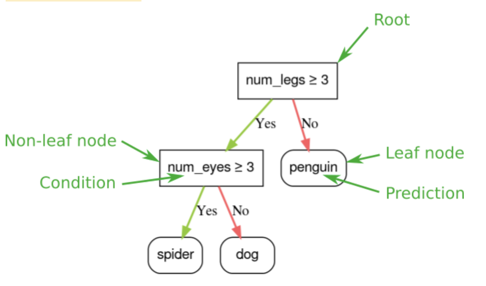
Figure 1:A simple classification decision tree.
• Inference of a decision tree model is computed by routing an example from the root (at the top) to one of the leaf nodes (at the bottom) according to the conditions. The value of the reached leaf is the decision tree's prediction. – The set of visited nodes is called the inference path. For example, consider the following feature values:•
Figure 2:The inference path for an example num_legs=4, num_eyes=2
• Similarly, decision trees can predict numerical values by labeling leaves with regressive predictions (numerical values). – For example, the following decision tree predicts a numerical cuteness score of an animal between 0 and 10.•
Figure 3:A decision tree that makes numerical prediction.
2.2. Types of Conditions2.2.1. Axis-aligned vs. Oblique Conditions• An axis-aligned condition involves only a single feature. An oblique condition involves multiple features:– num_legs ≥ 2– num_legs ≥ num_fingers• • Often, decision trees are trained with only axis-aligned conditions. However, oblique splits are more powerful because they can express more complex patterns.– Oblique splits sometime produce better results at the expense of higher training and inference costs.• Graphing the preceding two conditions yields the following feature space separation:•
Figure 4:Feature space separation for the conditions
2.2.2. Binary vs. Non-Binary Conditions• Conditions with two possible outcomes (for example, true or false) are called binary conditions. Decision trees containing only binary conditions are called binary decision trees.• Non-binary conditions have more than two possible outcomes. Therefore, non-binary conditions have more discriminative power than binary conditions. Decisions containing one or more non-binary conditions are called non-binary decision trees.• • Note: Conditions with too much power are also more likely to overfit. For this reason, decision forests generally use binary decision trees.– A non-binary condition can be emulated with multiple binary conditions; therefore, binary trees are not inherently less powerful than non-binary trees.• The most common type of condition is the threshold condition expressed as → feature ≥ threshold– Other types of conditions exist:
Figure 5:Common types of binary conditions.
Back To Top3. How Do You Train Decision Trees?3.1. Growing Decision Trees• The optimal training of a decision tree is an NP-hard problem → Therefore, training is generally done using heuristics → an easy-to-create learning algorithm that gives a non-optimal, but close to optimal, decision tree.• Most algorithms used to train decision trees work with a greedy divide and conquer strategy. – The algorithm starts by creating a single node (the root) and recursively and greedily grows the decision tree.– At each node, all the possible conditions are evaluated and scored. * The algorithm selects the "best" condition, that is, the condition with the highest score.– The algorithm then repeats recursively and independently on both children nodes. – When no satisfying conditions are found, the node becomes a leaf. – The leaf prediction is determined as the most representative label value in the examples.–
deftrain_decision_tree(training_examples): root = create_root()# Create a decision tree with a single empty root. grow_tree(root, training_examples)# Grow the root node.return rootdefgrow_tree(node, examples): condition = find_best_condition(examples)# Find the best condition.if condition isNone:# No satisfying conditions were found, therefore the grow of the branch stops. set_leaf_prediction(node, examples)return# Create two childrens for the node. positive_child, negative_child = split_node(node, condition)# List the training examples used by each children. negative_examples =[example for example in examples ifnot condition(example)] positive_examples =[example for example in examples if condition(example)]# Continue the growth of the children. grow_tree(negative_child, negative_examples) grow_tree(positive_child, positive_examples)
• Step 1: Create a root.• Step 2: Grow node #1. The condition "x1 ≥ 1" was found. Two child nodes are created.• Step 3: Grow node #2. No satisfying conditions were found. So, make the node into a leaf.• Step 4: Grow node #3. The condition "x2 ≥ 0.5" was found. Two child nodes are created.•
• Note: Depending on the number and type of input features, the number of possible conditions for a given node can be huge, generally infinite. For example, given a threshold condition featurei≥t, the combination of all the possible threshold values for t∈R is infinite.• The routine responsible for finding the best condition is called the splitter. Because it needs to test a lot of possible conditions, splitters are the bottleneck when training a decision tree.• The score maximized by the splitter depends on the task. For example:– Information gain and Gini are commonly used for classification.– Mean squared error (MSE) is commonly used for regression.3.2. Binary Classification3.2.1. Exact splitter for binary classification with numerical features• Here, we'll explore the simplest and most common splitter algorithm, which creates conditions of the form featurei≥t in the following setting:– Binary classification task– Without missing values in the examples– Without pre-computed index on the examples• Assume a set of n examples with a numerical feature and a binary label "orange" and "blue". Formally, let's describe the dataset D as:• D={(xi,yi)}i∈[1,n]• where:– xi is the value of a numerical feature in R (the set of real numbers).– yi is a binary classification label value in {orange, blue}.• Our objective is to find a threshold value t (threshold) such that dividing the examples D into the groups T(rue) and F(alse) according to the xi≥t condition improves the separation of the labels; for example, more "orange" examples in T and more "blue" examples in F.• Shannon entropy is a measure of disorder. For a binary label:– Shannon entropy is at a maximum when the labels in the examples are balanced (50% blue and 50% orange).– Shannon entropy is at a minimum (value zero) when the labels in the examples are pure (100% blue or 100% orange).
Figure 6:Three different entropy levels.
EntropyIn information theory, a description of how unpredictable a probability distribution is. Alternatively, entropy is also defined as how much information each example contains. A distribution has the highest possible entropy when all values of a random variable are equally likely.The entropy of a set with two possible values "0" and "1" (for example, the labels in a binary classification problem) has the following formula:H=-plogp - qlogq =-plogp -(1-p)log(1-p)where:• H is the entropy.• p is the fraction of "1" examples.• q is the fraction of "0" examples. Note that q=1-p• log is generally log2. In this case, the entropy unit is a bit.For example, suppose the following:• 100 examples contain the value "1"• 300 examples contain the value "0"Therefore, the entropy value is:• p = 0.25• q = 0.75• H = (-0.25)log2(0.25) - (0.75)log2(0.75) = 0.81 bits per exampleA set that is perfectly balanced (for example, 200 "0"s and 200 "1"s) would have an entropy of 1.0 bit per example. As a set becomes more imbalanced, its entropy moves towards 0.0.In decision trees, entropy helps formulate information gain to help the splitter select the conditions during the growth of a classification decision tree.Compare entropy with:• gini impurity• cross-entropy loss function• Entropy is often called Shannon's entropy.Gini ImpurityA metric similar to entropy. Splitters use values derived from either gini impurity or entropy to compose conditions for classification decision trees. Information gain is derived from entropy. There is no universally accepted equivalent term for the metric derived from gini impurity; however, this unnamed metric is just as important as information gain.Gini impurity is also called gini index, or simply gini.Gini impurity is the probability of misclassifying a new piece of data taken from the same distribution. The gini impurity of a set with two possible values "0" and "1" (for example, the labels in a binary classification problem) is calculated from the following formula:I = 1-(p2+q2)=1-(p2+(1-p)2)where:• I is the gini impurity.• p is the fraction of "1" examples.• q is the fraction of "0" examples. Note that q=1-pFor example, consider the following dataset:• 100 labels (0.25 of the dataset) contain the value "1"• 300 labels (0.75 of the dataset) contain the value "0"Therefore, the gini impurity is:• p = 0.25• q = 0.75• I = 1 - (0.252 + 0.752) = 0.375Consequently, a random label from the same dataset would have a 37.5% chance of being misclassified, and a 62.5% chance of being properly classified.A perfectly balanced label (for example, 200 "0"s and 200 "1"s) would have a gini impurity of 0.5. A highly imbalanced label would have a gini impurity close to 0.0.Cross-entropyA generalization of Log Loss to multi-class classification problems. Cross-entropy quantifies the difference between two probability distributions.Log LossThe loss function used in binary logistic regression.The following formula calculates Log Loss:Log Loss =∑(x,y)∈D-ylog(y′)-(1-y)log(1-y′)where:• (x,y)∈D is the data set containing many labeled examples, which are (x,y) pairs.• y is the label in a labeled example. Since this is logistic regression, every value of y must either be 0 or 1.• y′ is the predicted value (somewhere between 0 and 1, exclusive), given the set of features in x.PerplexityOne measure of how well a model is accomplishing its task. For example, suppose your task is to read the first few letters of a word a user is typing on a smartphone keyboard, and to offer a list of possible completion words. Perplexity, P, for this task is approximately the number of guesses you need to offer in order for your list to contain the actual word the user is trying to type.Perplexity is related to cross-entropy as follows:P=2-cross entropyLogitsThe vector of raw (non-normalized) predictions that a classification model generates, which is ordinarily then passed to a normalization function. If the model is solving a multi-class classification problem, logits typically become an input to the softmax function. The softmax function then generates a vector of (normalized) probabilities with one value for each possible class → tf.nn.sigmoid_cross_entropy_with_logitsLog OddsThe logarithm of the odds of some event.If the event is a binary probability, then odds refers to the ratio of the probability of success (p) to the probability of failure (1-p). For example, suppose that a given event has a 90% probability of success and a 10% probability of failure. In this case, odds is calculated as follows:odds=p
1-p=0.9
0.1=9The log-odds is simply the logarithm of the odds. By convention, "logarithm" refers to natural logarithm, but logarithm could actually be any base greater than 1. Sticking to convention, the log-odds of our example is therefore:log-odds=ln(9)=2.2The log-odds function is the inverse of the sigmoid function → sigmoid(x)=1
1+e-xIn machine learning, x is generally a weighted sum.
• Formally, we want to find a condition that decreases the weighted sum of the entropy of the label distributions in T and F. • The corresponding score is the information gain, which is the difference between D's entropy and {T,F} entropy. This difference is called the information gain.• The following figure shows a bad split, in which the entropy remains high and the information gain low:
Figure 7:A bad split does not reduce the entropy of the label.
• By contrast, the following figure shows a better split in which the entropy becomes low (and the information gain high):•
Figure 8: good split reduces the entropy of the label.
• Formally:• T={(xi,yi)|(xi,yi)∈D with xi≥t}F={(xi,yi)|(xi,yi)∈D with xi<t}R(X)=|{x|x∈X and x=pos}|
|D|H(F)• where:– IG(D,T,F) is the information gain of splitting D into T and F.– H(X) is the entropy of the set of examples X.– |X| is the number of elements in the set X.– t is the threshold value.– pos is the positive label value, for example, "blue" in the example above. Picking a different label to be the "positive label" does not change the value of the entropy or the information gain.– R(X) is the ratio of positive label values in examples X.– D is the dataset (as defined earlier in this unit).• In the following example, we consider a binary classification dataset with a single numerical feature x. The following figure shows for different threshold t values (x-axis):•
Figure 9:Four threshold plots.
• These plots show the following:– The "frequency" plot shows that observations are relatively well spread with concentrations between 18 and 60. – A wide value spread means there are a lot of potential splits, which is good for training the model.– The ratio of "blue" labels in the dataset is ~25%. The "ratio of blue label" plot shows that for threshold values between 20 and 50:* The T set contains an excess of "blue" label examples (up to 35% for the threshold 35).* The F set contains a complementary deficit of "blue" label examples (only 8% for the threshold 35).– Both the "ratio of blue labels" and the "entropy" plots indicate that the labels can be relatively well separated in this range of threshold.– This observation is confirmed in the "information gain" plot. We see that the maximum information gain is obtained with t⩰28 for an information gain value of ~0.074. Therefore, the condition returned by the splitter will be x≥28.– The information gain is always positive or null. * It converges to zero as the threshold value converges towards its maximum/minimum value. · In those cases, either F or T becomes empty while the other one contains the entire dataset and shows an entropy equal to the one in D. * The information gain can also be zero when H(T)=H(F)=H(D). · At threshold 60, the ratios of "blue" labels for both T and F are the same as that of D and the information gain is zero.• The candidate values for t in the set of real numbers (R) are infinite. • However, given a finite number of examples, only a finite number of divisions of D into T and F exist. Therefore, only a finite number of values of t are meaningful to test.• A classical approach is to sort the values xi in increasing order xs(i) such that:• xs(i)≤xs(i+1)• • Then, test t for every value halfway between consecutive sorted values of xi. – For example: * Suppose you have 1,000 floating-point values of a particular feature. * After sorting, suppose the first two values are 8.5 and 8.7. * In this case, the first threshold value to test would be 8.6.• Formally, we consider the following candidate values for t:• X={xs(i)+xs(i+1)
2|xs(i)≠xs(i+1)}• The time complexity of this algorithm is O(nlogn) with n the number of examples in the node (because of the sorting of the feature values). • When applied on a decision tree, the splitter algorithm is applied to each node and each feature. • Note that each node receives ~1
2 of its parent examples. • Therefore, according to the master theorem, the time complexity of training a decision tree with this splitter is → O(mnlog2n) where:– m is the number of features.– n is the number of training examples.• In this algorithm, the value of the features do not matter; only the order matters. • For this reason, this algorithm works independently of the scale or the distribution of the feature values. • This is why we do not need to normalize or scale the numerical features when training a decision tree.
What are the effects of replacing the numerical features with their negative values (for example, changing the value +8 to -8) with the exact numerical splitter?Different conditions will be learned, but the overall structure of the decision tree will remain the same.• If the features change, then the conditions will change.The structure of the decision tree will be completely different.• The structure of the decision tree will actually be pretty much the same. The conditions will change, though.
The same conditions will be learned; only the positive/negative children will be switched.What two answers best describe the effect of testing only half (randomly selected) of the candidate threshold values in X?The information gain would be higher or equal.The final decision tree would have worse testing accuracy.
The final decision tree would have no better training accuracy.
The information gain would be lower or equal.What would happen if the "information gain" versus "threshold" curve had multiple local maxima?
The algorithm would select the global maximum.It is impossible to have multiple local maxima.• Multiple local maxima are possible.The algorithm would select the local maxima with the smallest threshold value.Compute the information gain of the following split:
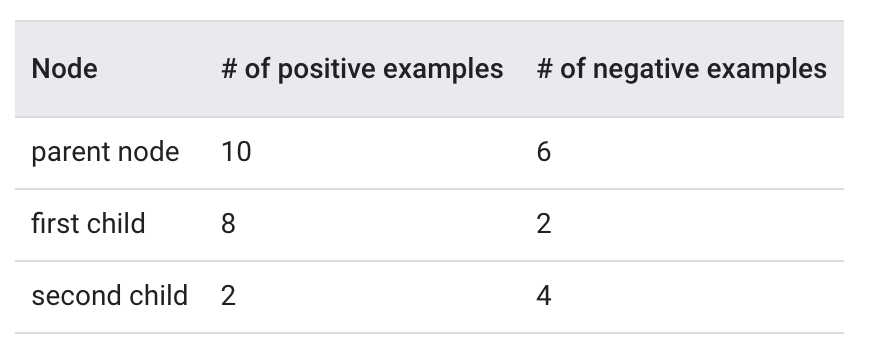
# Positive label distributionp_parent =10/(10+6)# = 0.625p_child_1 =8/(8+2)# = 0.8p_child_2 =2/(2+4)# = 0.3333333# Entropyh_parent =-p_parent * log(p_parent)-(1-p_parent)* log(1-p_parent)# = 0.6615632h_child_1 =...# = 0.5004024h_child_2 =...# = 0.6365142# Ratio of example in the child 1s =(8+2)/(10+6)f_final = s * h_child_1 +(1-s)* h_child_2 # = 0.5514443information_gain = h_parent - f_final # = 0.1101189
Back To Top3.3. Overfitting and Pruning• Using the algorithm described above, we can train a decision tree that will perfectly classify training examples, assuming the examples are separable. • However, if the dataset contains noise, this tree will overfit to the data and show poor test accuracy.• The following figure shows a noisy dataset with a linear relation between a feature x and the label y. • The figure also shows a decision tree trained on this dataset without any type of regularization. • This model correctly predicts all the training examples (the model's prediction match the training examples). • However, on a new dataset containing the same linear pattern and a different noise instance, the model would perform poorly.
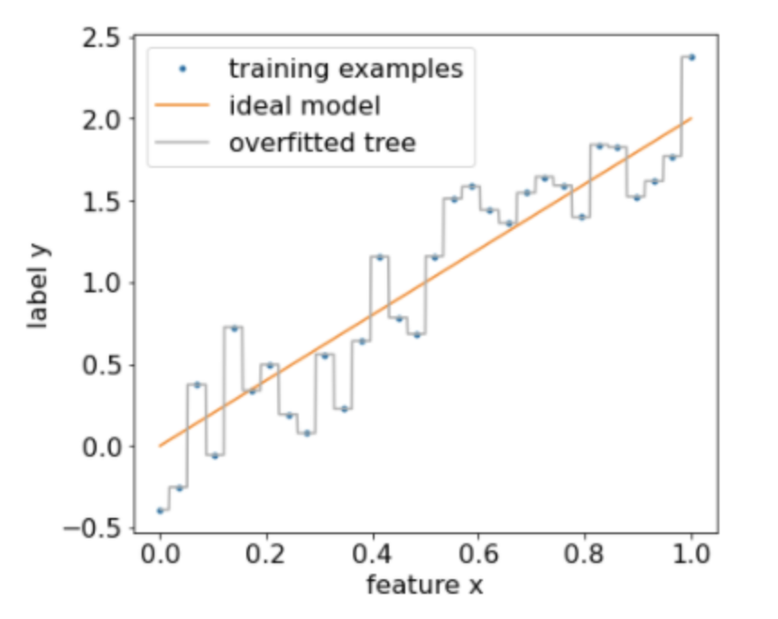
Figure 10:A noisy dataset
• To limit overfitting a decision tree, apply one or both of the following regularization criteria while training the decision tree:– Set a maximum depth: Prevent decision trees from growing past a maximum depth, such as 10.– Set a minimum number of examples in leaf: A leaf with less than a certain number of examples will not be considered for splitting.• • The following figure illustrates the effect of differing minimum number of examples per leaf. The model captures less of the noise.
Figure 11:Differing minimum number of examples per leaf
• You can also regularize after training by selectively removing (pruning) certain branches, that is, by converting certain non-leaf nodes to leaves. – A common solution to select the branches to remove is to use a validation dataset → if removing a branch improves the quality of the model on the validation dataset, then the branch is removed.• The following drawing illustrates this idea. – Here, we test if the validation accuracy of the decision tree would be improved if the non-leaf green node was turned into a leaf; that is, pruning the orange nodes.
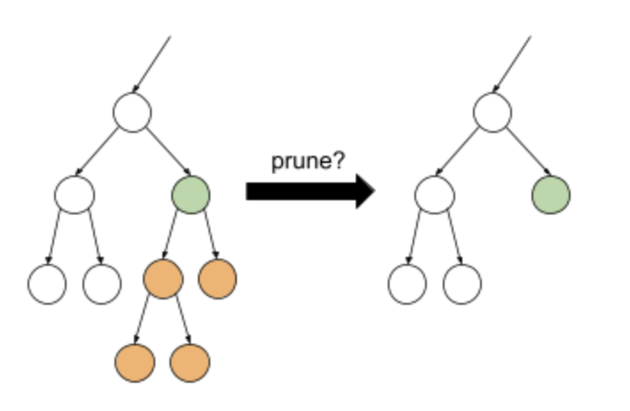
Figure 12:Pruning a condition and its children into a leaf
• • The following figure illustrates the effect of using 20% of the dataset as validation to prune the decision tree:•
Figure 13:Using 20% of the dataset to prune the decision tree
• Note: Using a validation dataset reduces the number of examples available for the initial training of the decision tree.• Many model creators apply multiple criteria. For example, you could do all of the following:– Apply a minimum number of examples per leaf.– Apply a maximum depth to limit the growth of the decision tree.– Prune the decision tree.• Those criteria introduce new hyperparameters that need to be tuned (e.g. maximum tree depth), often with automated hyperparameter tuning. • Decision trees are generally fast enough to train to use hyperparameter tuning with cross-validation. • For example, on a dataset with n examples:– Divide the training examples into p non-overlapping groups. For example: p=10.– For all the possible hyperparameter values; for example, max depth in {3,5,6,7,8,9}, min examples in {5,8,10,20}.* Evaluate, on each group, the quality of a decision tree trained on the other p-1 groups.* Average the evaluation access to the groups.– Select the hyperparameter value with the best averaged evaluation.– Train a final decision tree using all the n examples with the selected hyperparameters.3.3.1. Direct decision tree interpretation• Decision trees are easily interpretable. – That said, changing even a few examples can completely change the structure—and therefore the interpretation—of the decision tree.• Note: Especially when the dataset contains many somehow similar features, the learned decision tree is only one of multiple more-or-less equivalent decision trees that fit the data.• Because of the way decision trees are built, partitioning the training examples, one can use a decision tree to interpret the dataset itself (as opposed to the model). Each leaf represents a particular corner of the dataset.– However, indirect interpretation is also informative.
What are the two effects of increasing the minimum number of examples per leaf in a decision tree?The size of the decision tree decreases.
The structure of the decision tree remains mostly unchanged.The structure of the decision tree can completely change.
The size of the decision tree increases.What operations can reduce overfitting in a model known to be overfitted (for example, by evaluating it on a test dataset).
Decrease the maximum depth.Decrease the minimum gain of a new node.Decrease the minimum number of observations in the leaves.
Increase the minimum gain of a new node.
Increase the minimum number of observations in the leaves.Increase the maximum depth.
Back To Top3.4. Variable Importance• Variable importance (also known as feature importance) is a score that indicates how "important" a feature is to the model. – For example, if for a given model with two input features "f1" and "f2", the variable importances are {f1=5.8, f2=2.5}, then the feature "f1" is more "important" to the model than feature "f2". – As with other machine learning models, variable importance is a simple way to understand how a decision tree works.• For decision trees, you can apply model agnostic variable importances such as permutation variable importances →
A type of variable importance that evaluates the increase in the prediction error of a model after permuting the feature’s values. Permutation variable importance is a model agnostic metric.
• Decision trees also have specific variable importances, such as:– The sum of the split score with a given variable.– The number of nodes with a given variable.– The average depth of the first occurrence of a feature across all the tree paths.• Variable importances can differ by qualities such as:– semantics– scale– properties• Furthermore, variable importances provide different types of information about:– the model– the dataset– the training process• For example,the number of conditions containing a specific feature indicates how much a decision tree is looking at this specific feature, which might indicate variable importance.– After all, the learning algorithm would not have used a feature in multiple conditions if it did not matter. – However, the same feature appearing in multiple conditions might also indicate that a model is trying but failing to generalize the pattern of a feature. – For example, this can happen when a feature is just an example identifier with no information to generalize.• On the other hand, a high value for a high permutation variable importance indicates that removing a feature hurts the model, which is an indication of variable importance. – However, if the model is robust, removing any one feature might not hurt the model.• Because different variable importances inform about different aspects of the models, looking at several variable importances at the same time is informative. – For example, if a feature is important according to all the variable importances, this feature is likely important. – As another example, if a feature has a high "number of nodes" variable importance and a small "permutation" variable importance, then this feature might be hard to generalize and can hurt the model quality.
Suppose the "sum of the split score" variable importance of feature f1 is greater than the "number of nodes" variable importance of feature f2. In this case, which of the following statements is correct?f1 is more important than f2.
f1 is neither more important nor less important than f2.f1 is less important than f2.
Back To Top4. A Decision Tree Example• We'll use the TF-DF (TensorFlow Decision Forest) library train, tune, and interpret a decision tree.4.1. Preliminaries• Install the TensorFlow Decision Forests library → !pip install tensorflow_decision_forests• Import the following libraries:• •
import numpy as npimport pandas as pdimport tensorflow_decision_forests as tfdf
4.2. The Dataset• We're going to use the Palmer Penguins dataset which contains size measurements for three penguin species:– Chinstrap– Gentoo– Adelie• The goal is to predict the species of penguin based on data in the Palmer's Penguins dataset.• Let's read the data:•
path ="""https://storage.googleapis.com/download.tensorflow.org/data/palmer_penguins/penguins.csv"""pandas_dataset = pd.read_csv(path)# Display the first 3 examples.pandas_dataset.head(3)
• Unlike neural networks, decision forests support all these feature types natively, so you don't have to do one-hot encoding, normalization, or extra is_present feature.• To simplify interpretability, the following code manually converts the penguin species into integer labels:• •
• The following code cell splits the dataset into a training set and testing set:
np.random.seed(1)# Use the ~10% of the examples as the testing set# and the remaining ~90% of the examples as the training set.test_indices = np.random.rand(len(pandas_dataset))<0.1pandas_train_dataset = pandas_dataset[~test_indices]pandas_test_dataset = pandas_dataset[test_indices]print("Training examples: ",len(pandas_train_dataset))# >> Training examples: 309print("Testing examples: ",len(pandas_test_dataset))# >> Testing examples: 35
4.3. Training a model with default hyperparameters• We can train our first CART (Classification and Regression Trees) model without specifying any hyperparameters. • That's because the tfdf.keras.CartModel function provides good default hyperparameter values.
• The preceding call to tfdf.keras.CartModel did not specify columns to use as input features → Therefore, every column in the training set is used. • The call also did not specify the semantics (for example, numerical, categorical, text) of the input features. Therefore, tfdf.keras.CartModel will automatically infer the semantics.• Call tfdf.model_plotter.plot_model_in_colab to display the resulting decision tree:
• The first condition tests the value of bill_depth_mm. Tables below show the likelihood of different species depending on the outcome of the first condition.
Figure 14:Likelihood of different species if bill_depth_mm ≥ 16.35
Figure 15:Likelihood of different species if bill_depth_mm < 16.35
• If bill_depth_mm < 16.5 is True, further testing whether the body_mass_g ≥ 4175 can perfectly separate between 86 Gentoos and 5 Gentoos+Adelie.• The following code provides the training and test accuracy of the model:
• Note: Since decision trees do not have the concept of loss, the "loss" returned by the Keras evaluate function is always zero.• It is rare, but possible, that the test accuracy is higher than the training accuracy. – In that case, the test set possibly differs from the training set. – However, this is not the case here as the train/test was split randomly. A more likely explanation is that the test dataset is very small (only 35 examples), so the accuracy estimation is noisy.• To train a better model, optimize the hyperparameters with the Keras tuner.• Important note:Don't tune hyperparameters on the test dataset. – Instead, tune hyperparameters on a separate validation dataset (on large datasets) or using cross-validation (on small datasets).• The following code optimizes two parameters:– the minimum number of examples in a condition node (min_examples)– the ratio of the training dataset used for pruning validation (validation_ratio)• •
# first install keras_tuner: !pip install keras-tunerimport keras_tuner as ktdefbuild_model(hp): model = tfdf.keras.CartModel( min_examples=hp.Choice("min_examples",# Try four possible values for "min_examples" hyperparameter.# min_examples=10 would limit the growth of the decision tree,# while min_examples=1 would lead to deeper decision trees.[1,2,5,10]), validation_ratio=hp.Choice("validation_ratio",# Three possible values for the "validation_ratio" hyperparameter.[0.0,0.05,0.10]),) model.compile("accuracy")return modeltuner = kt.RandomSearch( build_model, objective="val_accuracy", max_trials=10, directory="/tmp/tuner", project_name="tune_cart")tuner.search(x=tf_train_dataset, validation_data=tf_test_dataset)best_model = tuner.get_best_models()[0]print("Best hyperparameters: ", tuner.get_best_hyperparameters()[0].values)# >> Best hyperparameters: {'min_examples': 2, 'validation_ratio': 0.0}
• The following code retrains and evaluates the model using those optimized hyperparameters. – The accuracy of 1.0 means our model perfectly explains our test dataset in this toy example.
model = tfdf.keras.CartModel(min_examples=2, validation_ratio=0.0)model.fit(tf_train_dataset)model.compile("accuracy")print("Test evaluation: ", model.evaluate(tf_test_dataset, return_dict=True))# >> Test evaluation: {'loss': 0.0, 'accuracy': 1.0}tfdf.model_plotter.plot_model_in_colab(model, max_depth=10)
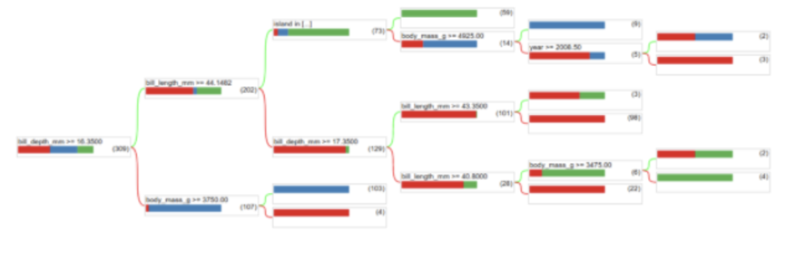
4.4. Usage and Limitation• As mentioned earlier, a single decision tree often has lower quality than modern machine learning methods like random forests, gradient boosted trees, and neural networks. • However, decision trees are still useful in the following cases:– As a simple and inexpensive baseline to evaluate more complex approaches.– When there is a tradeoff between the model quality and interpretability.– As a proxy for the interpretation of the decision forests model, which the course will explore later on.Back To Top5. What Are Decision Forests?• A decision forest is a generic term to describe models made of multiple decision trees. • The prediction of a decision forest is the aggregation of the predictions of its decision trees. • The implementation of this aggregation depends on the algorithm used to train the decision forest. – For example,* In a multi-class classification random forest, each tree votes for a single class, and the random forest prediction is the most represented class. * In a binary classification gradient boosted Tree (GBT), each tree outputs a logit (a floating point value), and the gradient boosted tree prediction is the sum of those values followed by an activation function (e.g. sigmoid).• The next two chapters detail those two decision forests algorithms.Back To Top6. What Are Random Forests?• In 1906, a weight judging competition was held in England. 787 participants guessed the weight of an ox. The median error of individual guesses was 37 lb (an error of 3.1%). However, the overall median of the guesses was only 9 lb away from the real weight of the ox (1198 lb), which was an error of only 0.7%.
• This anecdote illustrates the Wisdom of the crowd: In certain situations, collective opinion provides very good judgment.• Mathematically, the wisdom of the crowd can be modeled with the Central limit theorem: – Informally, the squared error between a value and the average of N noisy estimates of this value tends to zero with a 1/N factor. – However, if the variables are not independent, the variance is greater.• In machine learning, an ensemble is a collection of models whose predictions are averaged (or aggregated in some way). • If the ensemble models are different enough without being too bad individually, the quality of the ensemble is generally better than the quality of each of the individual models. • An ensemble requires more training and inference time than a single model. • After all, you have to perform training and inference on multiple models instead of a single model.• Informally, for an ensemble to work best, the individual models should be independent. – As an illustration, an ensemble composed of 10 of the exact same models (that is, not independent at all) won't be better than the individual model. – On the other hand, forcing models to be independent could mean making them worse. – Effective ensembling requires finding the balance between model independence and the quality of its sub-models.6.1. Random Forests• A random forest (RF) is an ensemble of decision trees in which each decision tree is trained with a specific random noise. 6.1.1. Bagging• Bagging (bootstrap aggregating) means training each decision tree on a random subset of the examples in the training set. • Each decision tree is trained on the same number of examples as in the original training set. • For example,– If the original training set contains 60 examples, then each decision tree is trained on 60 examples. – However, bagging only trains each decision tree on a subset (typically, 67%) of those examples. – So, some of those 40 examples in the subset must be reused while training a given decision tree. This reuse is called training "with replacement."• Note: While not present in the original random forest paper, the sampling of examples is sometimes done "without replacement"; that is, a training example cannot be present more than once in a decision tree training set. For example, in the preceding table, all values would all be either 0 or 1.– You can enable training without replacement with the following assignment in TF-DF→bootstrap_training_dataset=False6.1.2. Attribute Sampling• Attribute sampling means that instead of looking for the best condition over all available features, only a random subset of features are tested at each node. • The set of tested features is sampled randomly at each node of the decision tree.• The following decision tree illustrates the attribute/feature sampling. – Here a decision tree is trained on 5 features (f1-f5). – The blue nodes represent the tested features while the white ones are not tested.– The condition is built from the best tested features (represented with a red outline).
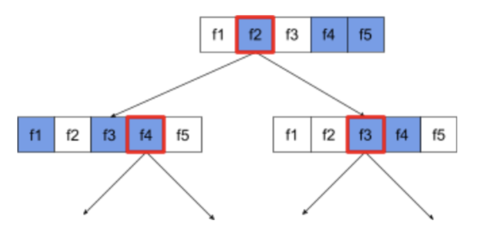
Figure 16:Attribute Sampling
• The ratio of attribute sampling is an important regularization hyperparameter. • The preceding Figure used a ~ 3
5 ratio. • Many random forest implementations test, by default, 1/3 of the features for regression and number of features for classification.• In TF-DF, the following hyperparameters control attribute sampling:– num_candidate_attributes– num_candidate_attributes_ratio• For example, if num_candidate_attributes_ratio=0.5, half of the features will be tested at each node.6.1.3. Disabling decision tree regularization• The decision trees in a random forest are trained without pruning (as described in Overfitting and Pruning). • The lack of pruning significantly increases the variance and significantly reduces the bias of the individual decision tree learning. – In other words, the individual decision trees overfit, but the random forest is not.• We expect the training and test accuracy of a random forest to differ. – The training accuracy of a random forest is generally much higher (sometimes equal to 100%). – However, a very high training accuracy in a random forest is normal and does not indicate that the random forest is overfitted.• The two sources of randomness (bagging and attribute sampling) ensure the relative independence between the decision trees. – This independencecorrects the overfitting of the individual decision trees. – Consequently, the ensemble is not overfitted. We'll illustrate this non-intuitive effect in the next unit.• Pure random forests train without maximum depth or minimum number of observations per leaf. – In practice, limiting the maximum depth and minimum number of observations per leaf is beneficial. – By default, many random forests use the following defaults:* maximum depth of ~16* minimum number of observations per leaf of ~5– You can tune these hyperparameters.6.1.4. The clarity of noise• Why would random noise improve the quality of a random forest?– To illustrate the benefits of random noise, Figure 17 shows the predictions of a classical (pruned) decision tree and a random forest trained on a few examples of simple two-dimensional problem with an ellipse pattern.– Ellipses patterns are notoriously hard for decision tree and decision forest algorithms to learn with axis-aligned conditions, so they make a good example. – Notice that the pruned decision tree can't get the same quality of prediction as the random forest.•
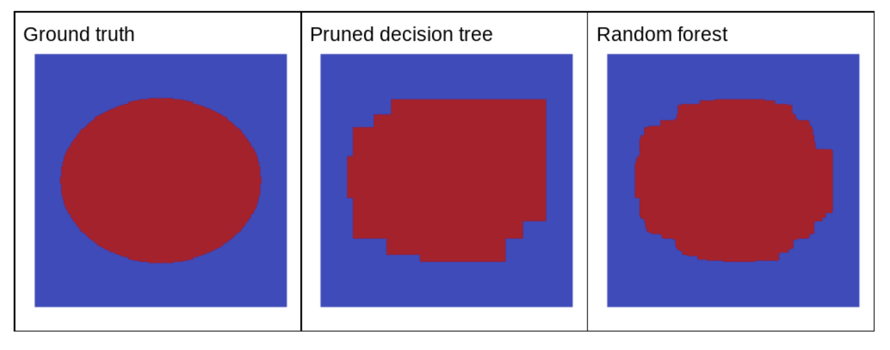
Figure 17:Ground truth vs. predictions generated by a single pruned decision tree and predictions generated by a random forest.
• The next plot shows the predictions of the first three unpruned decision trees of the random forest.• Notice that the individual predictions of these three decision trees are worse than the predictions of the pruned decision tree in the preceding figure. • However, since the errors of the individual decision trees are only weakly correlated, the three decision trees combine in an ensemble to create effective predictions.
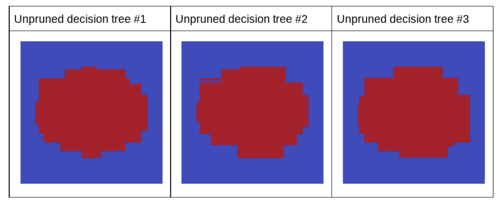
Figure 18:Three unpruned decision trees that will build an effective ensemble.
• Because the decision trees of a random forest are not pruned, training a random forest does not require a validation dataset. – In practice, and especially on small datasets, models should be trained on all the available data.• When training a random forest, as more decision trees are added, the error almost always decreases; that is, the quality of the model almost always improves. – Yes, adding more decision trees almost always reduces the error of the random forest. – In other words, adding more decision trees cannot cause the random forest to overfit. – At some point, the model just stops improving. Leo Breiman famously said, "Random Forests do not overfit".• For example,– The following plot shows the test evaluation of a random forest model as more decision trees are added. – The accuracy rapidly improves until it plateaus around 0.865. – However, adding more decision trees does not make accuracy decrease; in other words, the model does not overfit. – This behavior is (mostly) always true and independent of the hyperparameters.
Figure 19:Accuracy stays constant as more decision trees are added to the random forest.
6.2. Out-of-bag Evaluation• Random forests do not require a validation dataset. • Most random forests use a technique called out-of-bag-evaluation (OOB evaluation) to evaluate the quality of the model. • OOB evaluation treats the training set as if it were on the test set of a cross-validation.• As explained earlier, each decision tree in a random forest is typically trained on ~67% of the training examples. • Therefore, each decision tree does not see ~33% of the training examples. • • The core idea of OOB-evaluation is as follows:– To evaluate the random forest on the training set.– For each example, only use the decision trees that did not see the example during training.• The following table illustrates OOB evaluation of a random forest with 3 decision trees trained on 6 examples. The table shows which decision tree is used with which example during OOB evaluation.•
• In the example above, the OOB predictions for training example 1 will be computed with decision tree #3 (since decision trees #1 and #2 used this example for training). In practice, on a reasonable size dataset and with a few decision trees, all the examples have an OOB prediction.– In TF-DF, the OOB-evaluation is available in the training logs if the model is trained with → compute_oob_performances=True• OOB evaluation is also effective to compute permutation variable importance for random forest models. – Remember from Variable importances that permutation variable importance measures the importance of a variable by measuring the drop of model quality when this variable is shuffled. – The random forest "OOB permutation variable importance" is a permutation variable importance computed using the OOB evaluation.– In TF-DF, the OOB permutation variable importances are available in the training logs if the model is trained with → compute_oob_variable_importances=True6.3. Interpreting Random Forests• Random forests are more complex to interpret than decision trees. – Random forests contain decision trees trained with random noise. – Therefore, it is harder to make judgments on the decision tree structure. – However, we can interpret random forest models in a couple of ways.• One approach to interpret a random forest is simply to train and interpret a decision tree with the CART algorithm. – Because both random forest and CART are trained with the same core algorithm, they "share the same global view" of the dataset. – This option works well for simple datasets and to understand the overall interpretation of the model.• Variable importances are another good interpretability approach. – For example, the following table ranks the variable importance of different features for a random forest model trained on the Census dataset (also known as Adult).
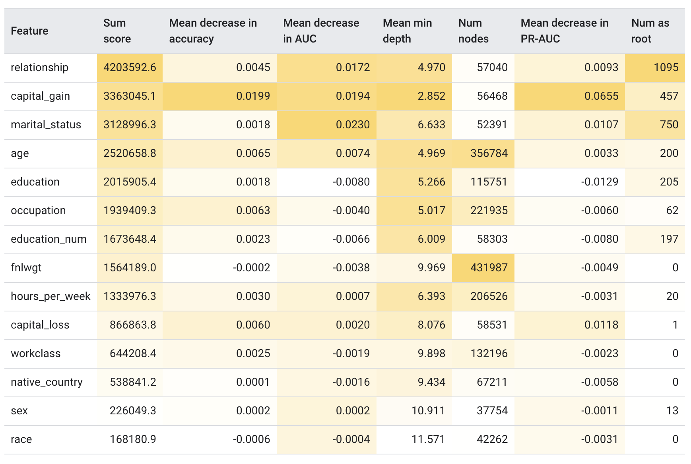
Figure 20:Variable importance of 14 different features
• As you see, different definitions of variable importances have different scales and can lead to differences in the ranking of the features.• Variable importances that come from the model structure (for example, sum score, mean min depth, num nodes and num as root in the table above) are computed similarly for decision trees (see section "Cart | Variable importance") and random forests.• Permutation variable importance (for example, mean decrease in {accuracy, auc, pr-auc} in the table above) are model agnostic measures that can be computed on any machine learning model with a validation dataset. – With random forest, however, instead of using a validation dataset, you can compute permutation variable importance with out-of-bag evaluation.• SHAP (SHapley Additive exPlanations) is a model agnostic method to explain individual predictions or model-wise interpretation. (See Interpretable Machine Learning by Molnar for an introduction to model agnostic interpretation.) • SHAP is ordinarily expensive to compute but can be speeded-up significantly for decision forests, so it is a good way to interpret decision forests.6.4. Pros and Cons of Random Forests• Pros– Like decision trees, random forests support natively numerical and categorical features and often do not need feature pre-processing.– Because the decision trees are independent, random forests can be trained in parallel. Consequently, you can train random forests quickly.– Random forests have default parameters that often give great results. Tuning those parameters often has little effect on the model.• Cons– Because decision trees are not pruned, they can be large. Models with more than 1M nodes are common. The size (and therefore inference speed) of the random forest can sometimes be an issue.– Random forests cannot learn and reuse internal representations. Each decision tree (and each branch of each decision tree) must relearn the dataset pattern. In some datasets, notably non-tabular dataset (e.g. image, text), this leads random forests to worse results than other methods.Back To Top7. What Are Gradient Boosted Decision Trees?• Like bagging and boosting, gradient boosting is a methodology applied on top of another machine learning algorithm. Informally, gradient boostinginvolves two types of models:– a "weak" machine learning model, which is typically a decision tree.– a "strong" machine learning model, which is composed of multiple weak models.• • In gradient boosting, at each step, a new weak model is trained to predict the "error" of the current strong model (which is called the pseudo response). – We will detail "error" later → For now, assume "error" is the difference between the prediction and a regressive label. – The weak model (that is, the "error") is then added to the strong model with a negative sign to reduce the error of the strong model.• Gradient boosting is iterative. Each iteration invokes the following formula:• Fi+1=Fi-fi• where:– Fi is the strong model at step i.– fi is the weak model at step i.• This operation repeats until a stopping criterion is met, such as a maximum number of iterations or if the (strong) model begins to overfit as measured on a separate validation dataset.• Let's illustrate gradient boosting on a simple regression dataset where:– The objective is to predict y from x.– The strong model is initialized to be a zero constant: F0(x)=0.– Note: The following code is for educational aid only. In practice, you will simply call tfdf.keras.GradientBoostedTreeModel.
# Simplified example of regressive gradient boosting.y =...# the labelsx =...# the featuresstrong_model =[]strong_predictions = np.zeros_like(y)# Initially, the strong model is empty.for i inrange(num_iters):# Error of the strong model error = strong_predictions - y# The weak model is a decision tree (see CART chapter)# without pruning and a maximum depth of 3. weak_model = tfdf.keras.CartModel( task=tfdf.keras.Task.REGRESSION, validation_ratio=0.0, max_depth=3) weak_model.fit(x=x, y=error) strong_model.append(weak_model) weak_predictions = weak_model.predict(x)[:,0] strong_predictions -= weak_predictions
• Let's apply this code on the following dataset:
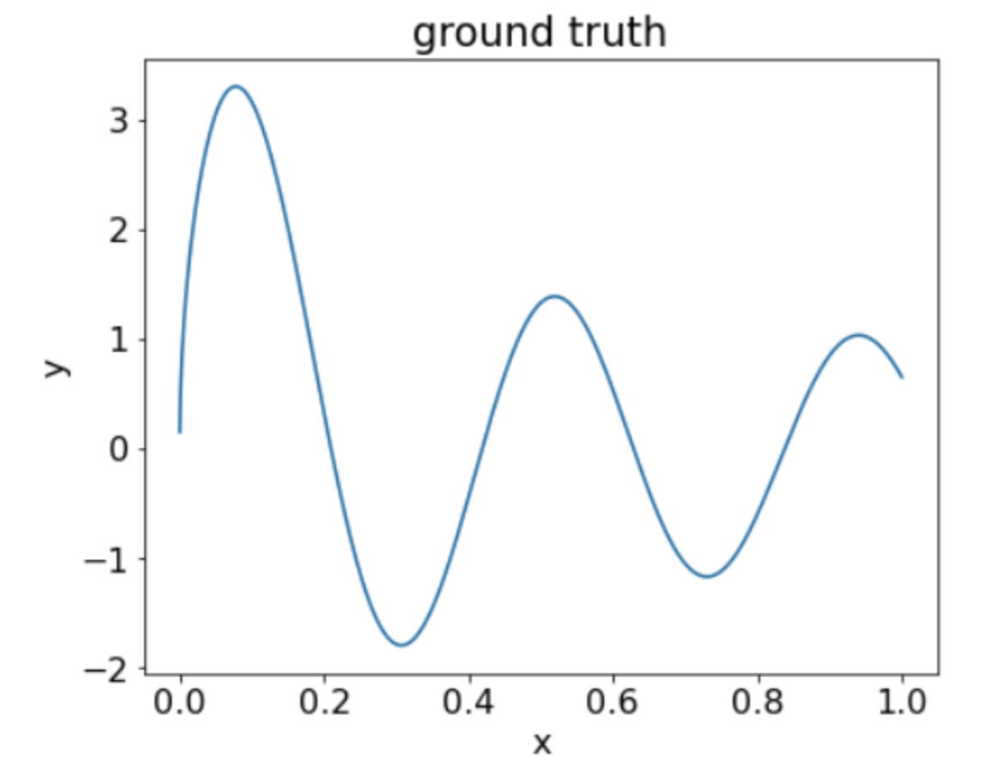
Figure 21:A synthetic regressive dataset with one numerical feature.
• Here are three plots after the first iteration of the gradient boosting algorithm:
Figure 22:Three plots after the first iteration.
• Note the following about the plots in Figure 22:– The first plot shows the predictions of the strong model, which is currently always 0.– The second plot shows the error, which is the label of the weak model.– The third plot shows the weak model.• The first weak model is learning a coarse representation of the label and mostly focuses on the left part of the feature space (the part with the most variation, and therefore the most error for the constant wrong model).• Following are the same plots for another iteration of the algorithm:
Figure 23:Three plots after the second iteration.
• Note the following about the plots in Figure 23:– The strong model now contains the prediction of the weak model of the previous iteration.– The new error of the strong model is a bit smaller.– The new prediction of the weak model now focuses on the right part of the feature space.• We run the algorithm for 8 more iterations:
Figure 24: Three plots after the third iteration and the tenth iteration.
• In Figure 24, note that the prediction of strong model starts to resemble the plot of the dataset.• These figures illustrate the gradient boosting algorithm using decision trees as weak learners. This combination is called gradient boosted (decision) trees.• The preceding plots suggest the essence of gradient boosting. However, this example lacks the following two real-world operations:– The shrinkage– The optimization of leaf values with one step of Newton's method• Note: In practice, there are multiple variants of the gradient boosting algorithm with other operations.7.1. Shrinkage• The weak model fi is multiplied by a small value 𝜈 (for example, 𝜈=0.1) before being added to the strong model Fi. – This small value is called the shrinkage. – In other words, instead of each iteration using the following formula → Fi+1=Fi-fi ; Each iteration uses the following formula:• Fi+1=Fi-𝜈fi• Shrinkage in gradient boosting is analogous to learning rate in neural networks. • Shrinkagecontrols how fast the strong model is learning, which helps limit overfitting → That is, a shrinkage value closer to 0 reduces overfitting more than a shrinkage value closer to 1.• In our code above, the shrinkage would be implemented as follows:
shrinkage =0.1# 0.1 is a common shrinkage value.strong_predictions -= shrinkage * weak_predictions
• 7.2. The Gradient Boosting Algorithm• In regression problems, it makes sense to define the signed error as the difference between the prediction and the label. • However, in other types of problems this strategy often leads to poor results. A better strategy used in gradient boosting is to:– Define a loss function similar to the loss functions used in neural networks. For example, the entropy (also known as log loss) for a classification problem.– Train the weak model to predict the gradient of the loss according to the strong model output.• Formally, given a loss function L(y,p) where y is a label and p a prediction, the pseudo response zi used to train the weak model at step i is:zi=𝜕L(y,Fi)
𝜕Fi• where Fi is the prediction of the strong model.• The preceding example was a regression problem: The objective is to predict a numerical value. • In the case of regression, squared error is a common loss function:L(y,p)=(y-p)2• In this case, the gradient is:z=𝜕L(y,Fi)
𝜕Fi=𝜕(y-p)2
𝜕p=2(y-p)=2 signed error• In order words, the gradient is the signed error from our example with a factor of 2. • Note that constant factors do not matter because of the shrinkage. • Note that this equivalence is only true for regression problems with squared error loss. – For other supervised learning problems (for example, classification, ranking, regression with percentile loss), there is no equivalence between the gradient and a signed error.7.2.1. Leaf and structure optimization with Newton's method step• Newton's method is an optimization method like gradient descent. – However, unlike the gradient descent that only uses the gradient of the function to optimize, Newton's method uses both the gradient (first derivative) and the second derivative of the function for optimization.• A step of gradient descent is as follows:xi+1=xi-𝜕f
𝜕x(xi)=xi-f′(xi)• and Newton's method as as follows:xi+1=xi-df
dx(xi)
d2f
d2x(xi)=xi-f′(xi)
f″(xi)• Optionally, Newton's method can be integrated to the training of gradient boosted trees in two ways:1. Once a tree is trained, a step of Newton is applied on each leaf and overrides its value. The tree structure is untouched; only the leaf values change.2. During the growth of a tree, conditions are selected according to a score that includes a component of the Newton formula. The structure of the tree is impacted.• TF-DF always applies a Newton step on the leaf (option 1).– You can enable option 2 with use_hessian_gain=True.7.3. Overfitting, regularization, and early stopping• Unlike random forests, gradient boosted trees can overfit. – Therefore, as for neural networks, you can apply regularization and early stopping using a validation dataset.– For example, the following figures show loss and accuracy curves for training and validation sets when training a GBT model. Notice how divergent the curves are, which suggests a high degree of overfitting.
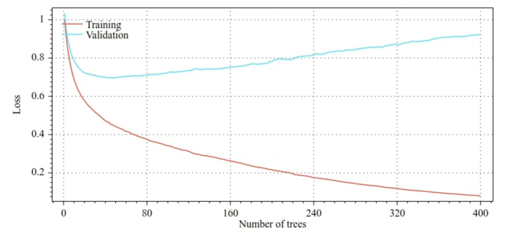
Figure 25:Loss vs. number of decision trees.
Figure 26:Accuracy vs. number of decision trees.
• Common regularization parameters for gradient boosted trees include:– The maximum depth of the tree.– The shrinkage rate.– The ratio of attributes tested at each node.– L1 and L2 coefficient on the loss.• Note that decision trees generally grow much shallower than random forest models. – By default, gradient boosted trees trees in TF-DF are grown to depth 6. Because the trees are shallow, the minimum number of examples per leaf has little impact and is generally not tuned.• • The need for a validation dataset is an issue when the number of training examples is small. – Therefore, it is common to train gradient boosted trees inside a cross-validation loop, or to disable early stopping when the model is known not to overfit.7.3.1. Usage Example• In the previous chapter, we trained a random forest on a small dataset. In this example, we will simply replace the random forest model with a gradient boosted trees model:
model = tfdf.keras.GradientBoostedTreesModel()# Part of the training dataset will be used as validation (and removed# from training).model.fit(tf_train_dataset)# The user provides the validation dataset.model.fit(tf_train_dataset, validation_data=tf_valid_dataset)# Disable early stopping and the validation dataset. All the examples are# used for training.model.fit( tf_train_dataset, validation_ratio=0.0, early_stopping="NONE")# Note: When "validation_ratio=0", early stopping is automatically disabled,# so early_stopping="NONE" is redundant here.
7.4. Usage and Limitations• Pros– Like decision trees, they natively support numerical and categorical features and often do not need feature pre-processing.– Gradient boosted trees have default hyperparameters that often give great results. Nevertheless, tuning those hyperparameters can significantly improve the model.– Gradient boosted tree models are generally small (in number of nodes and in memory) and fast to run (often just one or a few 𝜇s/examples).• Cons– The decision trees must be trained sequentially, which can slow training considerably. However, the training slowdown is somewhat offset by the decision trees being smaller.– Like random forests, gradient boosted trees can't learn and reuse internal representations. Each decision tree (and each branch of each decision tree) must relearn the dataset pattern. In some datasets, notably datasets with unstructured data (for example, images, text), this causes gradient boosted trees to show poorer results than other methods.Back To Top8. Summary• A decision tree is a model composed of a collection of conditions organized hierarchically in the shape of a tree. Conditions fall into various categories:– An axis-aligned condition involves only a single feature. An oblique condition involves multiple features.– A binary condition has two possible outcomes. A non-binary condition has more than two possible outcomes.• Training a decision tree involves searching for the best condition at each node. The splitter routine uses metrics such as information gain or Gini to determine the best condition.• A decision forest is a mode made of multiple decision trees. The prediction of a decision forest is the aggregation of the predictions of its decision trees.• A random forest is an ensemble of decision trees in which each decision tree is trained with a specific random noise.• Bagging is a technique in which each decision tree in the random forest is trained on a different subset of examples.• Random forests do not require a validation dataset. Instead, most random forests use a technique called out-of-bag-evaluation to evaluate the quality of the model.• A gradient boosted (decision) tree is a type of decision forest trained through iterative adjustments from input decision trees. A value called shrinkage controls the rate at which a gradient boosted (decision) tree learns and the degree to which it could overfit.Back To Top